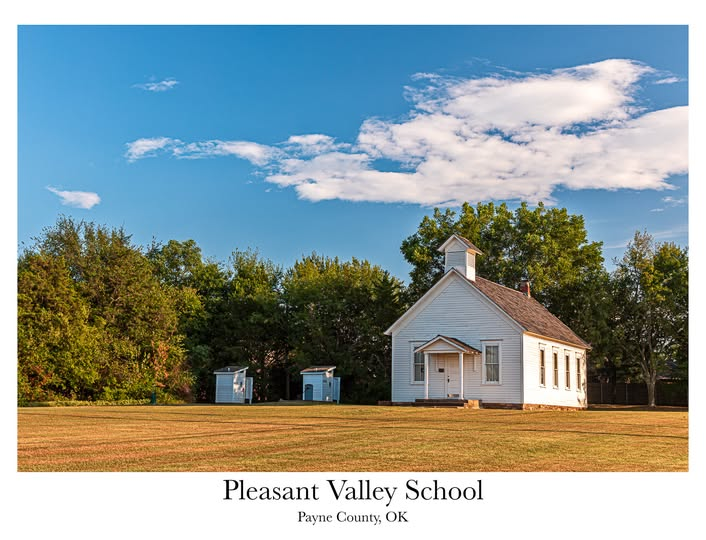

ESTABLISHED 1899 · STILLWATER, OKLAHOMA
Preserving the Past.
Inspiring the Future.
Experience Oklahoma's educational history at Pleasant Valley School, a treasured one-room schoolhouse.
A LIVING PIECE OF HISTORY
Welcome to Pleasant Valley School
Built in 1899 on land homesteaded by the Zuck family, Pleasant Valley School served generations of students in Payne County until its closure in 1941.
Saved from demolition and restored through the efforts of dedicated community members, the schoolhouse continues to bring Oklahoma's past to life.
Today, students can experience traditional classroom lessons, practice writing with quill pens, solve arithmetic problems on slates, and discover games enjoyed by children more than a century ago.
Discover Our Story →
HELP PRESERVE OUR HERITAGE
Keep History Alive
Your generosity helps preserve Pleasant Valley School and supports educational experiences for future generations.
Donate to the Preservation Fund